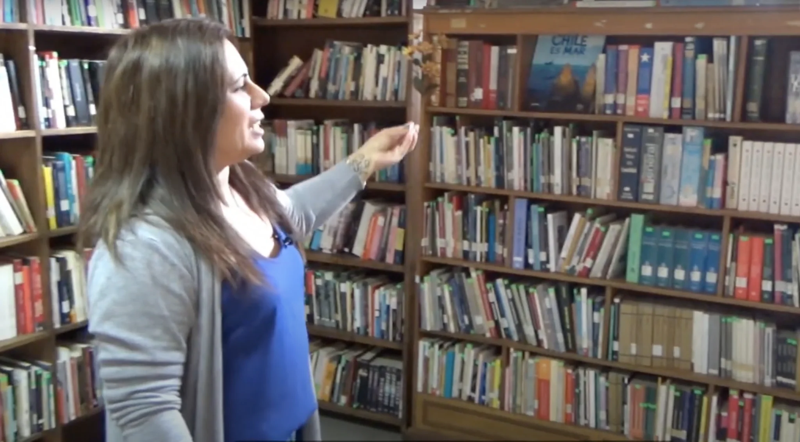

Cápsulas audiovisuales

Con el fin de visibilizar aquellos actores relevantes en nuestro territorio hemos realizado una serie de capsulas audiovisuales con enfoque de género, ya que creemos y valoramos el aporte de las mujeres de nuestra comuna, quienes se desempeñan en oficios y labores socioculturales que aportan al desarrollo de nuestro entorno, estas son las siguientes:
Andrea Salazar ENCARGADA DE BIBLIOTECA 146 QUINTA DE TILCOCO
Claudia Muñoz AMASANDERIA CHURRASCAS Localidad Puente Alta
Rosario Nuñez DISFRACES CHARITO Localidad Puente Alta
Carmen Herrera KIOSKO PLAZA DE ARMAS
MERCADO CAMPESINO Quinta Centro
ECO FERIA BUEN VICVIR Localidad Guacarhue